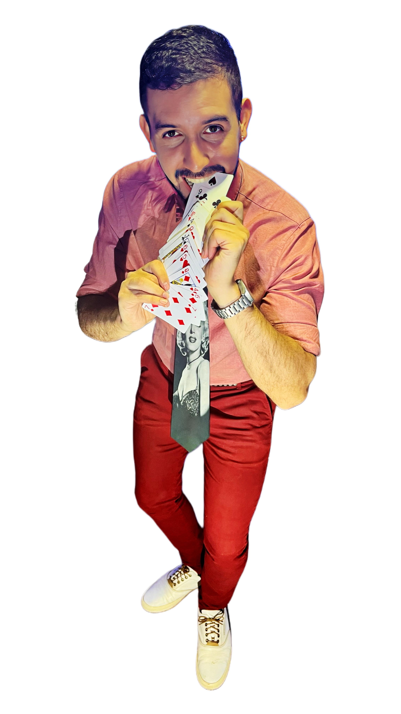

✨
Asombro
Magia visual y clara, que sorprende a todos como cuando eran niños.
Show de salón y escenario · Adultos y empresas
Un show visual de 45 minutos, cargado de humor, chispa y complicidad con el público. Las carcajadas y el asombro se mezclan en una experiencia inolvidable.
Presupuesto online en pocos minutos · Sin compromiso

Pensado para que el público se ría, se asombre y hable del show mucho después de que termine.
Magia visual y clara, que sorprende a todos como cuando eran niños.
Un show con chispa y humor, que relaja el ambiente y hace que todos se suelten.
El público no mira de afuera: participa, se divierte y se vuelve parte del espectáculo.
Opiniones reales de quienes ya me contrataron.
Tres pasos para tener tu fecha asegurada.
Completá un formulario corto: tipo de evento, fecha y lugar.
Al terminar ves el presupuesto en pantalla y lo podés descargar.
Escribime por WhatsApp, confirmo la disponibilidad y se reserva con una seña.
El show de magia y humor dura 45 minutos.
Para cumpleaños de adultos, casamientos, 15 años, cenas, fiestas y eventos de empresa. El show se adapta al público y al tipo de evento.
Sí. Podés combinar magia de cerca durante la recepción con el show de salón para cerrar la noche. En el formulario elegí la opción "Las dos".
Para las localidades que figuran en el formulario, sí: el presupuesto ya incluye viáticos y traslado. Si tu evento es en otra localidad, calculo el traslado según la distancia y te envío el presupuesto por WhatsApp.
Completás el formulario, ves tu presupuesto y me escribís por WhatsApp. Yo confirmo la disponibilidad y la fecha queda reservada con una seña.
Trabajo en Chaco, Corrientes y norte de Santa Fe, con base en Resistencia.
Pedí tu presupuesto online en unos minutos y reservá tu fecha.